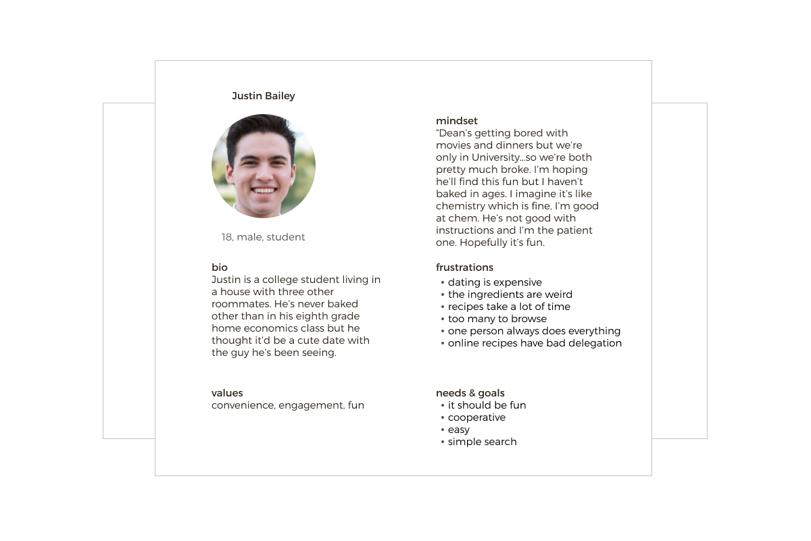
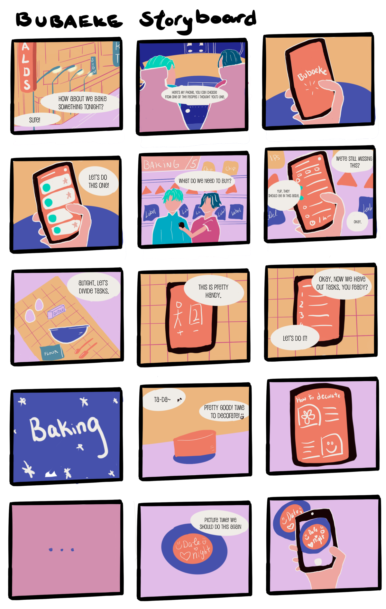
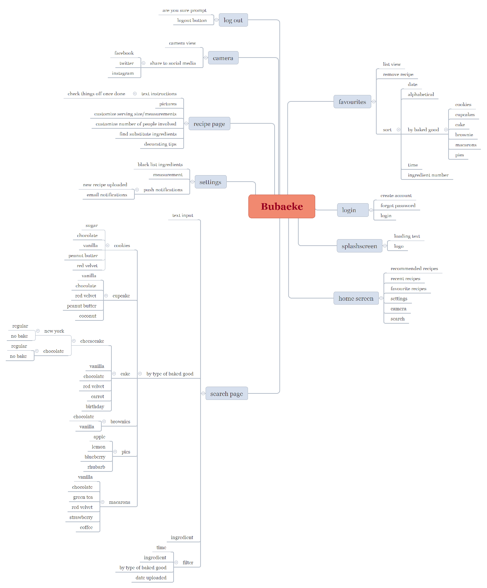
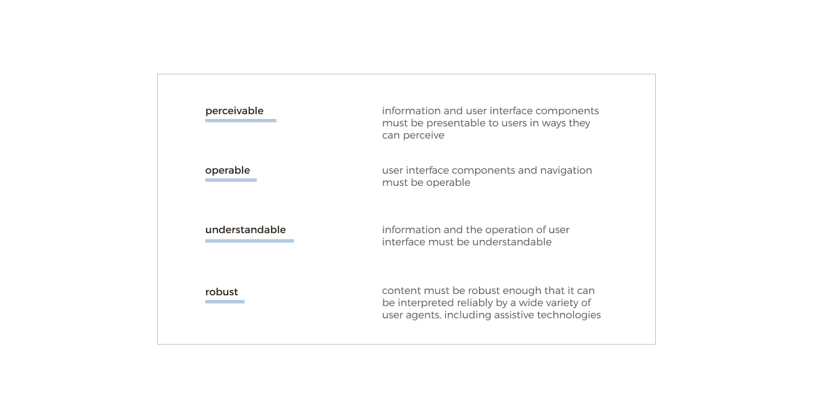
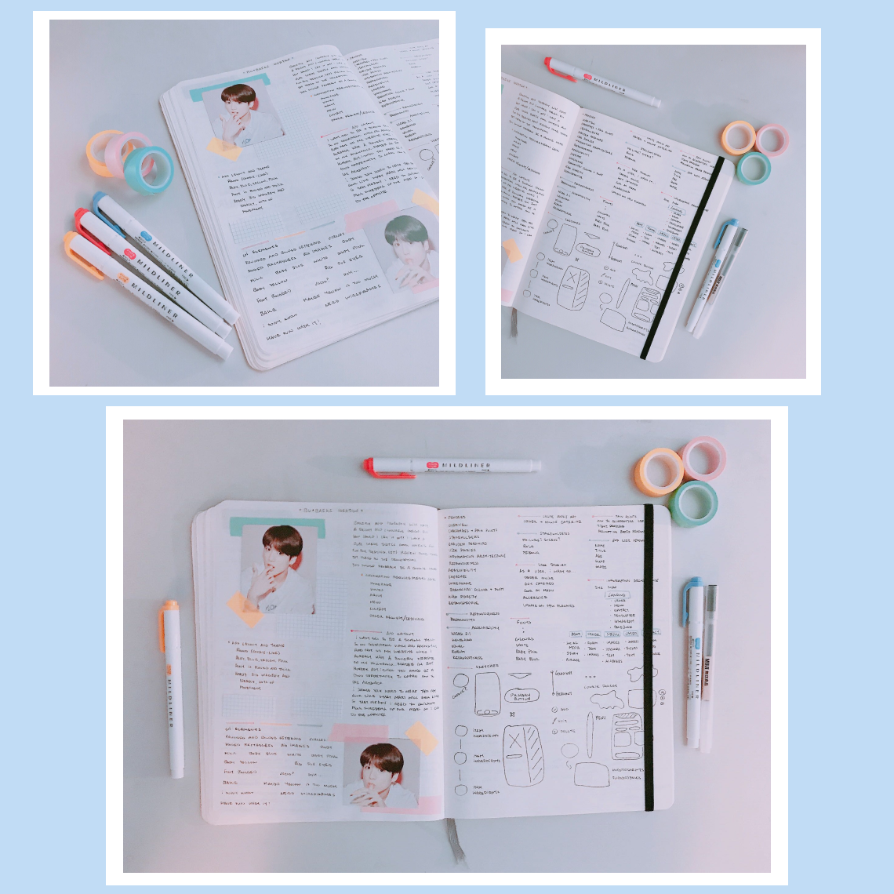
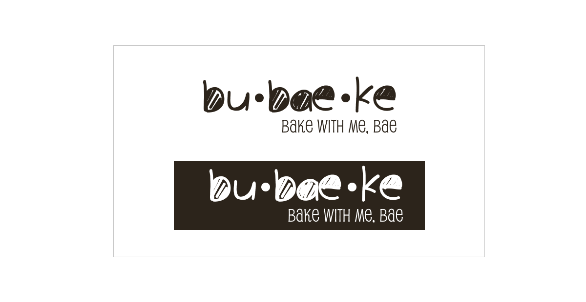
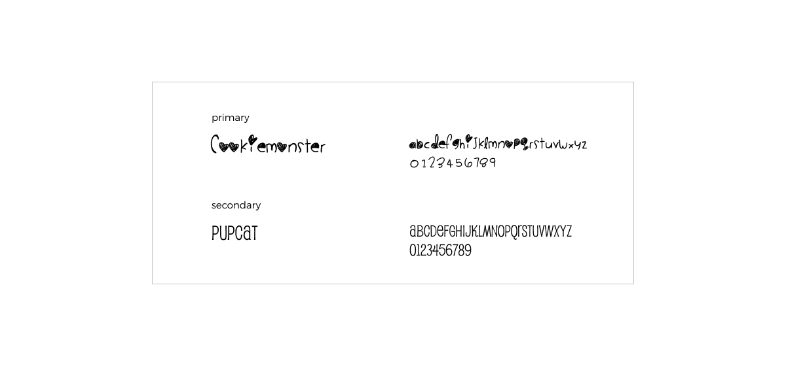
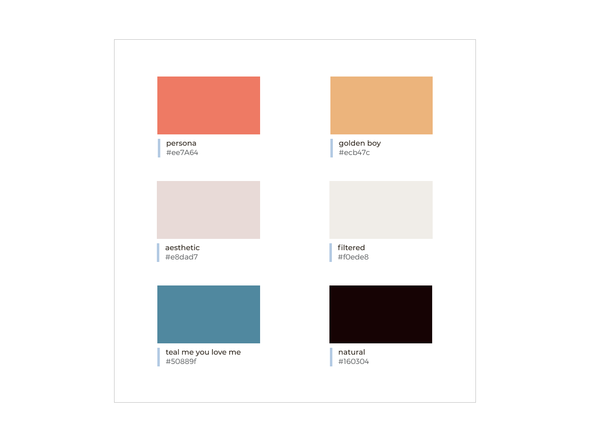

user experience designer & freelancer in calgary, ab, canada


Bubaeke acts as a personal baking companion app for mobile devices. With their bright and colourful imagery, Bubaeke encourages baking from the heart and their fun, creative recipes guides users through an interactive baking lesson perfect for a stay at home date night, sleepover, or #treatyourself day. Customize the number of bakers, amount you’re making, account for allergies, and choose from beautiful decorations to level up your skills as a baker. This app promotes cheerfulness, happiness, and appeals to those seeking the modern experience.
The challenge that comes with an instructive baking app is convincing the user that this is something that’s manageable and easy. The instructions must be clear and suitable for different types of learners. When it comes to baking, measurements need to be exact and scale appropriately. The greatest challenge would be presenting instructions to users at any baking level while keeping it fun and engaging. This app will be built from the recipes of CEO Jane Bae, YouTube baking channel sensation and owner of the bakery, Bubaeke.
My role is to design a mobile app from zero, taking a detailed and marketing strategist approach to creating an aesthetically pleasing solution with consideration to user engagement, branding, accessibility, and user experience.
At the start of this project, there was some confusion on who our target audience was. As this app was supposed to solve the pain points of many users, it was important that we did not over promise or try to do so much that we end up solving nothing at all.
With that in mind, I decided to create user personas to break down each of the users I thought Bubaeke would be perfect for.
Personas are a wonderful way to build empathy for users. By understanding more of their story, we can develop the reasoning behind their motivations. For Bubaeke, I created personas for end users and stakeholders, with an end user persona highlighted below.
With so many users we are trying to design for, I wanted to create storyboards to ensure that each user is targeted individually and their needs are addressed uniquely. If there was any overlap it would be easier to identify through a storyboard as well since each step or stage in the story will be visually in view.
Based on insights gathered from the personas, I broke down and mapped out the user needs and goals by turning them into stories. This will define the scope of the app as well as the requirements, features, and information architecture.

The information architecture considers the logical flow of information to the user and creates a way to structure it. This is done through the creation of a site map that will act as a backbone for the app.
For the information architecture, I used a mind mapping software called XMind to layout the content on each page of the mobile app and every interaction point that would be needed.
This application will follow the Web Content Accessibility Guidelines (WCAG) 2.1 AA guidelines and constraints. The AA compliance level will have a medium impact on visual aspects of the app.
Notable accessibility guidelines applicable to Bubaeke include captions for videos, colour contrast constraints, keyboard accessibility, spacing, logical flow of information, titles and headings, multiple ways of getting to pages, error suggestion and prevention, and elements can be determined through technological user agents
After gaining a better understanding of what is needed on the app, I began drawing numerous UI components that fulfill the requirements we've discovered and fit with the brand. I like to write in this stage of the process to remember ideas that are not quite fleshed out yet and will serve as prompts as I continue to work on this. Usually, these also contain edge cases I come up with when designing that I’ll need to consider later. Pictures and colours that inspire me can also be found on these sketch pages.
Based on my initial sketches, I created a set of mid-fidelity wireframes to map out the bare-bones of the app using Figma. Doing this helped me identify reusable patterns and see the overall look of the app

My favourite way to introduce user experience to people is to say that it is storytelling. A good story will leave the reader, viewer, or in this case, the user with an impression afterwards. The branding should match the impression that we want to leave. For Bubaeke, it needs to feel fun, lively, cheerful, and have users feeling accomplished and proud. There needs to be a brightness with this application.
Part of the vision includes creating a cute, friendly, and cheerful brand. Bubaeke will use CookieMonster and Pupcat for fonts. To add a friendly and bubbly feel that matches the baked goods, their brand colours will be: #EE7A64, #E8DAD7, #50889F, #ECB47C, #F0EDE8, #160304.
  One step away from the product, these are some of the high fidelity prototypes of the app for mobile devices.

Being my first website redesign, I incorporated lessons learned from University and from working but still found myself unprepared for a lot of the challenges I faced while researching and designing. The thoughts and ideas in my head still do not translate to design completely but it's always exciting learning how to pivot. In future case studies, I hope to further develop my design skills and be able to identify edge cases more quickly, design with more clarity, and have more of a personal style. Overall, I thoroughly enjoyed working on this project.